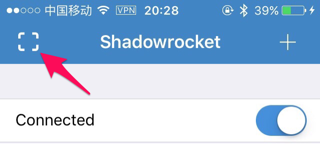
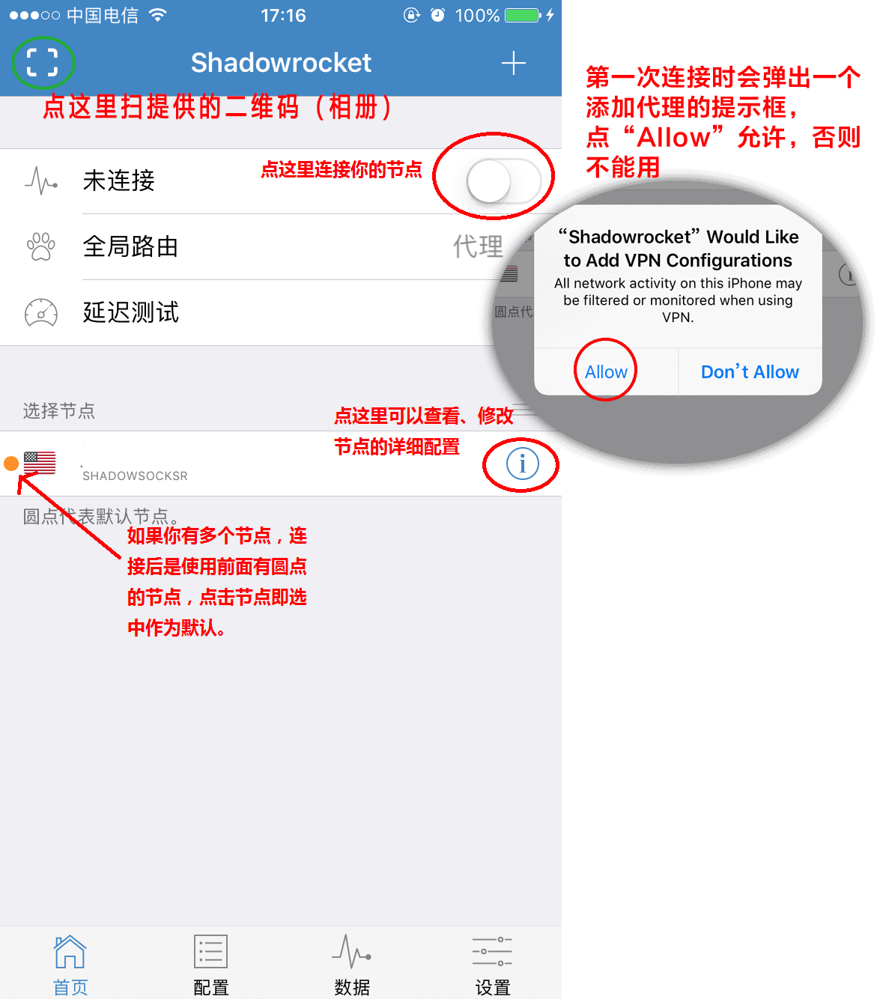
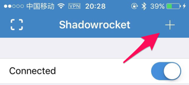
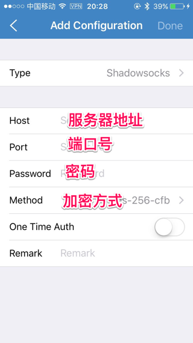
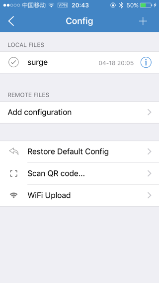
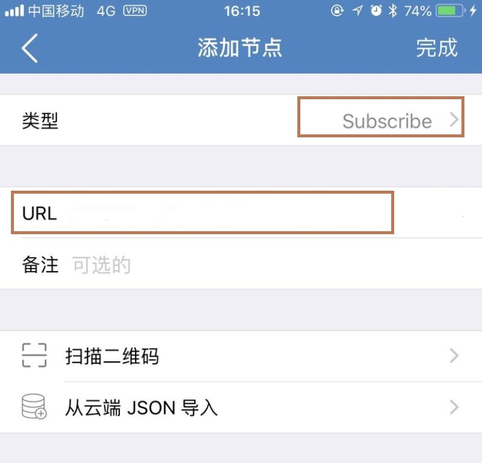
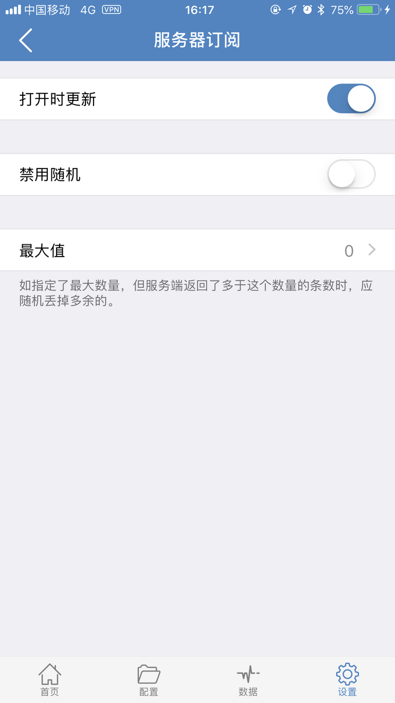

添加 Shadowsocks 账户
Shadowrocket 是一款专门为 Shadowsocks 设计的 APP，所以添加起来也是极其方便。点击左上角的方框即可扫描 Shadowsocks 账户服务器节点的二维码，免去输入的麻烦。

第一次连接时会弹出一个添加代理的提示框，点“Allow”允许，否则不能用。如果你有多个节点，连接后是使用前面有圆点的节点，点击节点即选中作为默认，选中的节点使用中无法删除。

或者你也可以点击右上角的加号进行手动输入


规则的设置
一般全局路由选择默认配置即可，如果要实现部分网站国内走直连，国外走代理的话，就需要用到规则。
点击 Settings，然后在点击 Config 你就可以看到以下界面

点击 + 通过添加链接，在点击 Use Config 来下载规则文件。你可以对其进行编辑，以满足自己的使用习惯。点击感叹号，然后在点击 Add Rule，点击 Type，就可以看到多种过滤方式进行设置了。
节点订阅设置
打开Shadowrocket，点击右上角加号 + ，在添加节点页面，将类型改为第三个 Subscribe，复制订阅地址粘贴到URL中，然后点击右上角完成即可。

在Shadowrocket设置–服务器订阅中打开【打开时更新】选项。

回到首页，打开连接开关，享受科学上网吧！
最后 若无法打开网页，可以进行如下测试
1、可以尝试小火箭软件最下面一排按钮，选择-配置 页面，点击 恢复默认配置。
2、更换手机4G网络进行尝试、重启路由器更改IP。
3、下载其他代理软件尝试， 推荐 如 Potatso Lite ,请使用 美区账号登陆App Store 搜索下载安装。